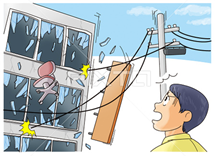
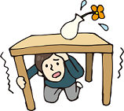
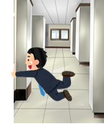
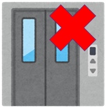
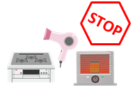

緊急地震速報が鳴り出したら

可能であれば、椅子でも何でも手近なものを挟んで避難経路上の扉を開放してください。(※無理はしない。)
また、むやみに外に飛び出すと、かえって危険です。
割れた窓ガラスや看板などが落下してくるかもしれません。
身の安全を確保する
  蛍光灯などの落下物や、棚などの転倒があるかもしれません。
机の下にかくれるなど、当面の安全を確保してください。
机などが無ければ、クッションやカバン等で頭部を守ってください。
蛍光灯などの落下物や、棚などの転倒があるかもしれません。
机の下にかくれるなど、当面の安全を確保してください。
机などが無ければ、クッションやカバン等で頭部を守ってください。
隠れる場所が無いときは

柱につかまるなど、転倒しないようにしてください。
移動出来るようなら、エレベーターホールや階段室などの比較的安全な場所に移動してください。
蛍光灯、掲示物、窓ガラス、商品棚、固定されていないものなどからは、できるだけ距離を取ってください。
エレベーターについて

地震時はエレベーターを使わないでください。揺れで自動停止するため、閉じ込められる可能性があります。
揺れが収まっても、しばらくエレベーターは使わないでください。
エレベーター内で地震が発生した場合は、全階のボタンを押して、扉が開いたら降りてください。
もし閉じ込められた場合は、緊急通話ボタンを押して、助けを求めてください。
揺れが収まったら

火を止め、ガスの元栓を閉じ、電気製品も可能な限り止めてください。
稼働している機械を停止し、基本的には施設の管理者・従業員の指示に従って行動してください。
ただし、危険が予測されるのに適切な指示が無い場合は、自ら行動することも選択肢としてください。
また、椅子でも何でも手近なものを挟んで避難経路上の扉を開放してください。
パニック状態に陥った集団に巻き込まれると、集団転倒の恐れもありますので注意してください。